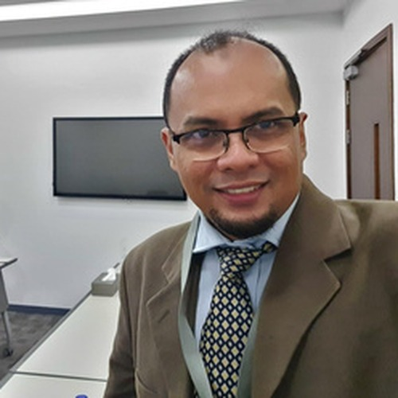

Academic, researcher and former designer with 25+ years across the UK, Asia and the Middle East — working at the intersection of digital heritage, 2D/3D media, VR/AR and generative AI in education.
Dr. Mohamad Izani Zainal Abidin is an academic and researcher specialising in digital heritage, digital media, and AI-enhanced design. He holds a PhD in Architecture from the University of Strathclyde (UK), where his research focused on digital heritage using 2D and 3D media, alongside master's and bachelor's degrees in Multimedia (Film & Animation) and a Diploma in Architecture.
He currently teaches Digital Media and Graphic Design at the Higher Colleges of Technology in the UAE, where he developed and launched the "AI in Digital Media" course. A former designer with deep expertise in traditional and digital craft, he now concentrates on generative AI, immersive technologies, and the preservation of cultural heritage through virtual reconstruction.
Beyond teaching, Dr. Izani is founder of AI4LIFE, through which he has delivered 50+ training sessions worldwide and empowered over 5,000 professionals across academia, industry and government. He serves as a journal reviewer for Elsevier and IGI Global (Q1–Q4), an external PhD examiner for international universities, an Advisory Board Member at the American University in the Emirates, and a member of the Council of Experts for the Government-Industry TVET Coordination Body.
His work bridges technical rigour, creative design and educational technology — pioneering Malaysia's first animation school early in his career, and today advising organisations on the responsible adoption of generative AI.
Digital Heritage using 2D/3D media
Film and Animation
Film and Animation
Launched the "AI in Digital Media" course; journal reviewer, PhD examiner, advisory board member.
50+ AI training sessions worldwide; 5,000+ professionals empowered.
AI-integrated curriculum; AED 210K secured as PI / Co-PI.
Established a 1M SAR 3D animation & VR lab; Research Council member.
Coordinated Multimedia & Graphic Design; Research Chairperson.
Top-3 proposal for the EU-funded VR Heritage Village project, Italy.
Led the Animation Design Studio; pioneered Malaysia's first animation school.
A cross-disciplinary toolkit spanning generative AI, 3D production, immersive technology and creative media.
Open to research collaboration, PhD examination, keynote invitations, and AI & immersive-media consulting.
Get in touch